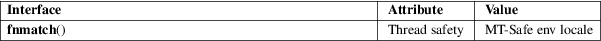

fnmatch − match filename or pathname
Standard C library (libc, −lc)
#include <fnmatch.h>
int fnmatch(const char *pattern, const char *string, int flags);
The fnmatch() function checks whether the string argument matches the pattern argument, which is a shell wildcard pattern (see glob(7)).
The
flags argument modifies the behavior; it is the
bitwise OR of zero or more of the following flags:
FNM_NOESCAPE
If this flag is set, treat backslash as an ordinary character, instead of an escape character.
FNM_PATHNAME
If this flag is set, match a slash in string only with a slash in pattern and not by an asterisk (*) or a question mark (?) metacharacter, nor by a bracket expression ([]) containing a slash.
FNM_PERIOD
If this flag is set, a leading period in string has to be matched exactly by a period in pattern. A period is considered to be leading if it is the first character in string, or if both FNM_PATHNAME is set and the period immediately follows a slash.
FNM_FILE_NAME
This is a GNU synonym for FNM_PATHNAME.
FNM_LEADING_DIR
If this flag (a GNU extension) is set, the pattern is considered to be matched if it matches an initial segment of string which is followed by a slash. This flag is mainly for the internal use of glibc and is implemented only in certain cases.
FNM_CASEFOLD
If this flag (a GNU extension) is set, the pattern is matched case-insensitively.
FNM_EXTMATCH
If this flag (a GNU extension) is set, extended patterns are supported, as introduced by ’ksh’ and now supported by other shells. The extended format is as follows, with pattern−list being a ’|’ separated list of patterns.
’?(pattern−list)’
The pattern matches if zero or one occurrences of any of the patterns in the pattern−list match the input string.
’*(pattern−list)’
The pattern matches if zero or more occurrences of any of the patterns in the pattern−list match the input string.
’+(pattern−list)’
The pattern matches if one or more occurrences of any of the patterns in the pattern−list match the input string.
’@(pattern−list)’
The pattern matches if exactly one occurrence of any of the patterns in the pattern−list match the input string.
’!(pattern−list)’
The pattern matches if the input string cannot be matched with any of the patterns in the pattern−list.
Zero if string matches pattern, FNM_NOMATCH if there is no match or another nonzero value if there is an error.
For an explanation of the terms used in this section, see attributes(7).

fnmatch()
POSIX.1-2008.
FNM_FILE_NAME
FNM_LEADING_DIR
FNM_CASEFOLD
GNU.
fnmatch()
POSIX.1-2001, POSIX.2.
sh(1), glob(3), scandir(3), wordexp(3), glob(7)